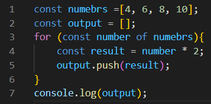
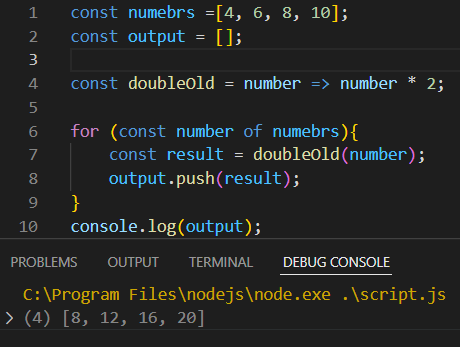
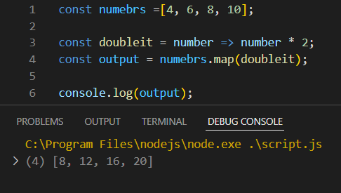
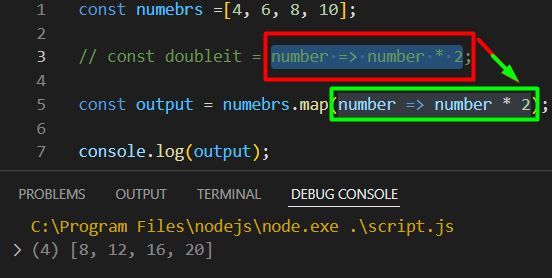
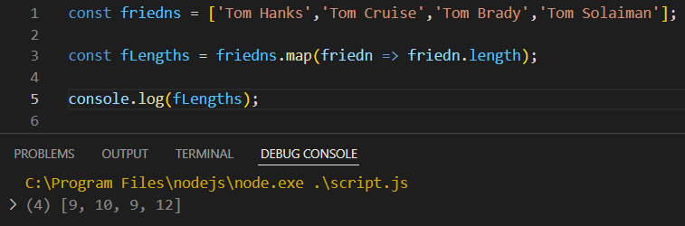
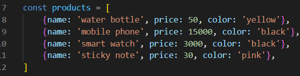
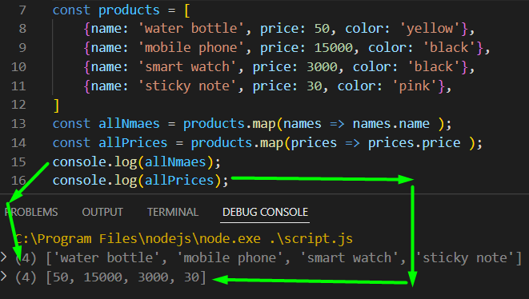
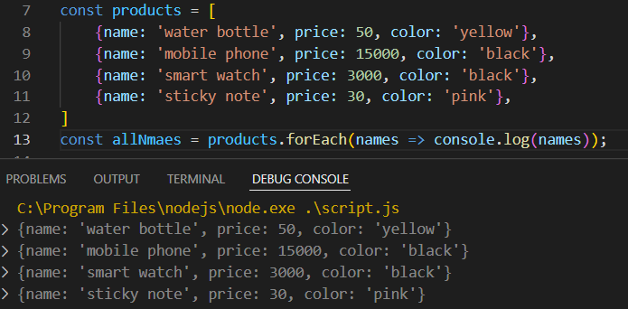

কোন একটা array এর মধ্যে থাকা number গুলাকে নিয়ে তাদের দিগুন করে নতুন একটা array এর মধ্যে store করতে হলে
for loop দিয়ে করা যায়

কিন্তু সেটা অনেক সহজে করা যায় একটা arrow function এর সাহায্যে ।

এখানে মোট ৩ টা কাজ করছি ।
1. loop তৈরি
2. element দিয়ে function কে call করছি ।
3. result কে একটা array এর মধ্যে push করছি ।
_____________ Map started _____________
এখন এই তিনটা কাজ এক সাথে shortcut এ করতে চাইলে ব্যেবহার করতে হলে
map এর বেয়বহার করতে হবে ।
map উপরের এই তিনটা কাজ এক লাইনে করবে (4 number line)

অর্থাৎ কোন array এর নামের পরে যদি .map লিখি তবে সে
1. array এর সব গুলা elements এর loop করে ফেলে
2. এবং braket এর মধ্যে যে function কে দিছি সে তাকেও call করবে ,
3. তারপর যে result টা পাবে সেটাকে variable এর নাম যেটা দিছি তার নামের একটা array বানিয়ে তার মধ্যে store করবে ।
আবার চাইলে function কে call করার জায়গায় পুরো function কেও বসিয়ে দেওয়া যায় ।



এখন আমি চাচ্ছি যে এখানে যে products এর নাম আছে সেগুলাকে একটা array এর মধ্যে store করতে ।
simple উপায়ে করলে সেটা করা যায় ,
( আমি চাই ) --> একটা loop করে products.name করে নাম গুলাকে আলাদা করে নিয়ে একটা array এর মধ্যে store করতে ।
তো এত গুলা কাজ একটা লাইনে করা যায় , .map এর সাহায্যে ।
সেটা করতে হলে , প্রথমে
const variable = arrayNmae.map(xyz => xyz.name);

যেমন উপরের ক্ষত্রে আমরা return নিছি তাই .map ইউজ করছি ।
.map টা for loop এর কাজ করে ।
তো যখন কোন retrun নিবনা তখন forEach() ব্যেবহার করা উচিৎ হবে ।
forEach() = মানে প্রতিটা element এর জন্য কিছু একটা করা ।

map আর forEach এর মধ্যে একটাই তফাৎ ,
যে map যে কাজটা করার সেটা করে পুরা একাটা array return করবে ।
কিন্তু forEach কোন return করবে না , সে প্রতিটা elements এর সাথে কোন নির্দিষ্ট কাজ করে , যেমন কোন function কে কল করা বা log করা ।